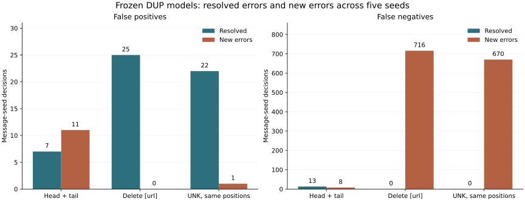

오류 44건 검토와 입력 변경 실험
남은 33건 직접 검토 · 원본 50행 추적 · 기존 시험 문자 2,317건 × DUP 5시드
기존 모델·임계값·정답은 그대로 유지했습니다. 기존 시험셋을 다시 사용한 사후 진단이며 새 독립 성능 검증이 아닙니다. 본문 라벨은 AI 잠정 판단이고 실제 사기 여부는 여전히 미확인입니다.
본문 라벨링 결과
- 정상 안내로도 해석 가능: 19건
- 홍보·광고 / 명확한 사기 요구 미관찰: 20건
- 판단에 필요한 문맥 부족: 2건
- 위험 요구가 본문에 보임: 3건
총 34개 유사도 그룹입니다. 서로 비슷한 문자와 5개 시드의 반복을 독립 사례로 세지 않습니다.
라벨의 출처에서 확인한 것
44건 모두 로컬 원본 CSV로 연결했고, 라벨과 설명이 정제 과정에서 이어졌음을 확인했습니다. 하지만 원본 설명은 발신자 인증·사건 번호·목적지 분석 결과를 첨부한 독립 판정 증거가 아닙니다.
일부 설명은 금융기관·기관의 문자 안내를 일률적으로 부정하거나 브랜드·심의 번호만으로 정상성을 추정합니다. 채용 공고를 대출 권유로 설명한 사례도 있습니다. 이런 한계를 표시했으며 실제 정답 오류라고 단정해 라벨을 바꾸지는 않았습니다.
실험: 해결한 오류와 새로 만든 오류
아래 수치는 5개 시드의 문자–시드 판정 합계입니다. 기존 FP 37건, FN 69건. FP 분모 8,325 / FN 분모 3,260. 고유 문자 수와 다릅니다.

지속 오류 사례에서 확인한 것
지속 오탐 4건 중 4건은 URL 삭제와 위치 유지 UNK 두 조건 모두에서 5개 시드의 오탐이 사라졌습니다. 이 사례의 판정이 URL 표식 정보에 민감함을 확인했지만, 표식 삭제를 일반 해결책으로 적용하면 새 미탐이 크게 늘어납니다. 지속 미탐 7건 중 앞뒤 입력으로 일부 해결된 것은 1건(2개 시드 판정)입니다. 따라서 모든 미탐을 입력 절단 탓으로 설명할 수 없습니다.
해석 범위
- 앞뒤 입력은 길이를 늘리지 않고 본문 앞 63토큰·뒤 63토큰을 연결했습니다. 보이는 내용과 문맥 인접성이 함께 바뀝니다.
- URL 삭제는 뒤의 토큰을 앞당길 수 있습니다. 위치 유지 UNK 대조도 함께 봐야 하며, UNK 자체도 인위적인 입력입니다.
- 입력 변경으로 판정이 바뀌었다는 사실은 확인할 수 있지만, 특정 단어가 유일한 오분류 원인이었다거나 실제 사기 탐지가 개선됐다고 단정할 수 없습니다.
- 모든 기존 모델 점수·판정의 재현을 통과한 뒤 실험했습니다. 모델 가중치·입력·임계값의 해시와 시드별 결과를 보존했습니다.
44건의 본문 판단과 원자료 감사 메모 보기 · 검토 보고서